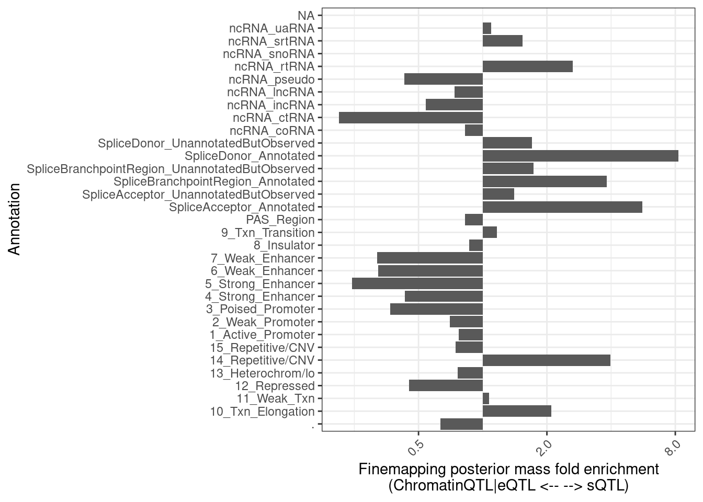
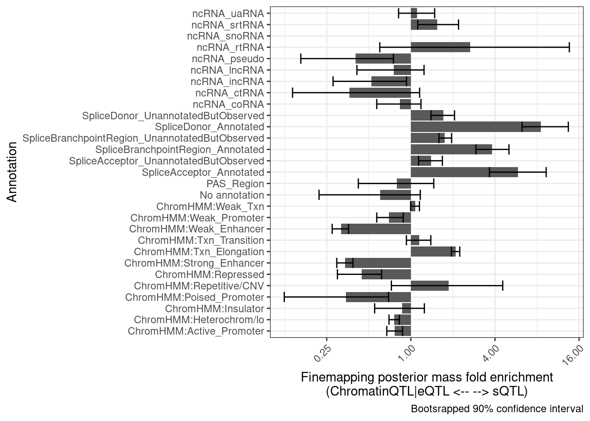
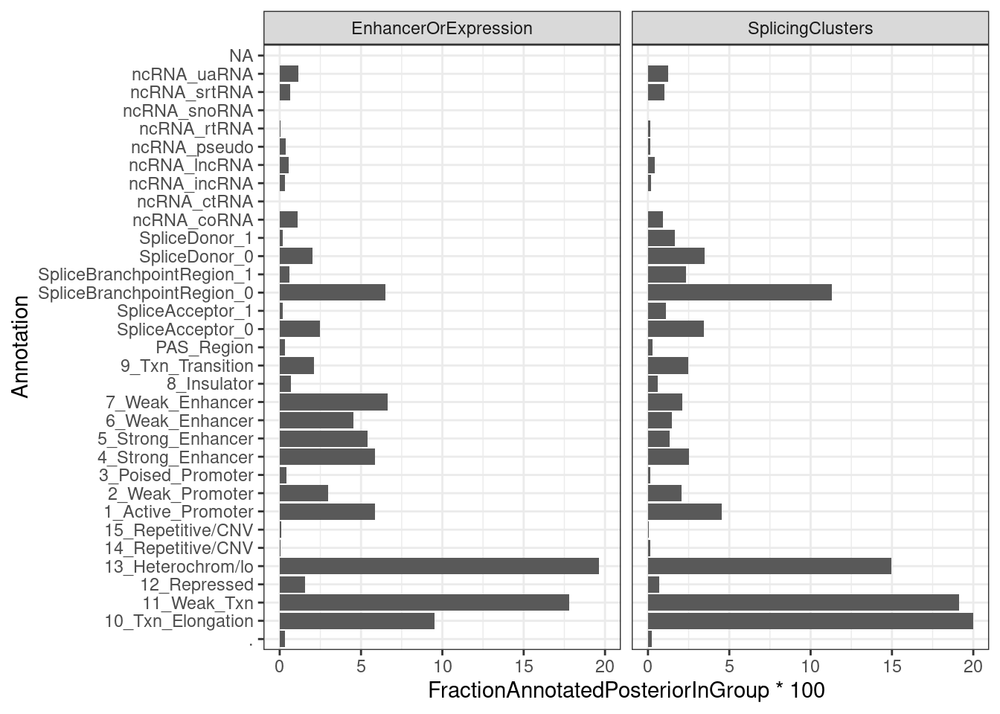
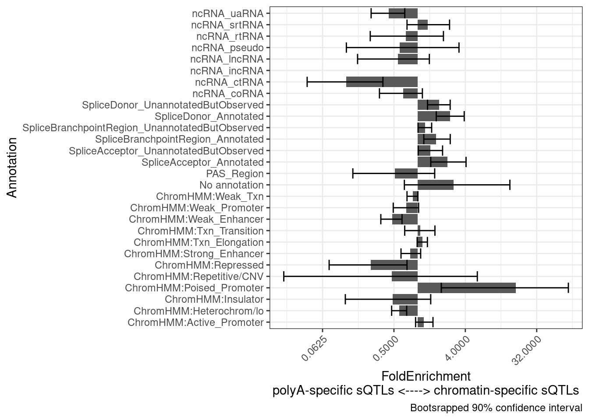

Last updated: 2022-10-07
Checks: 6 1
Knit directory: ChromatinSplicingQTLs/analysis/
This reproducible R Markdown analysis was created with workflowr (version 1.6.2). The Checks tab describes the reproducibility checks that were applied when the results were created. The Past versions tab lists the development history.
The R Markdown file has unstaged changes. To know which version of the R Markdown file created these results, you’ll want to first commit it to the Git repo. If you’re still working on the analysis, you can ignore this warning. When you’re finished, you can run wflow_publish to commit the R Markdown file and build the HTML.
Great job! The global environment was empty. Objects defined in the global environment can affect the analysis in your R Markdown file in unknown ways. For reproduciblity it’s best to always run the code in an empty environment.
The command set.seed(20191126) was run prior to running the code in the R Markdown file. Setting a seed ensures that any results that rely on randomness, e.g. subsampling or permutations, are reproducible.
Great job! Recording the operating system, R version, and package versions is critical for reproducibility.
Nice! There were no cached chunks for this analysis, so you can be confident that you successfully produced the results during this run.
Great job! Using relative paths to the files within your workflowr project makes it easier to run your code on other machines.
Great! You are using Git for version control. Tracking code development and connecting the code version to the results is critical for reproducibility.
The results in this page were generated with repository version edfdacc. See the Past versions tab to see a history of the changes made to the R Markdown and HTML files.
Note that you need to be careful to ensure that all relevant files for the analysis have been committed to Git prior to generating the results (you can use wflow_publish or wflow_git_commit). workflowr only checks the R Markdown file, but you know if there are other scripts or data files that it depends on. Below is the status of the Git repository when the results were generated:
Ignored files:
Ignored: .DS_Store
Ignored: .Rhistory
Ignored: .Rproj.user/
Ignored: analysis/.Rhistory
Ignored: code/.DS_Store
Ignored: code/.RData
Ignored: code/._.DS_Store
Ignored: code/._README.md
Ignored: code/._report.html
Ignored: code/.ipynb_checkpoints/
Ignored: code/.snakemake/
Ignored: code/APA_Processing/
Ignored: code/Alignments/
Ignored: code/ChromHMM/
Ignored: code/ENCODE/
Ignored: code/ExpressionAnalysis/
Ignored: code/FastqFastp/
Ignored: code/FastqFastpSE/
Ignored: code/Genotypes/
Ignored: code/IntronSlopes/
Ignored: code/Misc/
Ignored: code/MiscCountTables/
Ignored: code/Multiqc/
Ignored: code/Multiqc_chRNA/
Ignored: code/NonCodingRNA_annotation/
Ignored: code/PeakCalling/
Ignored: code/Phenotypes/
Ignored: code/PlotGruberQTLs/
Ignored: code/PlotQTLs/
Ignored: code/ProCapAnalysis/
Ignored: code/QC/
Ignored: code/QTL_SNP_Enrichment/
Ignored: code/QTLs/
Ignored: code/ReferenceGenome/
Ignored: code/Rplots.pdf
Ignored: code/Session.vim
Ignored: code/SplicingAnalysis/
Ignored: code/TODO
Ignored: code/Tehranchi/
Ignored: code/bigwigs/
Ignored: code/bigwigs_FromNonWASPFilteredReads/
Ignored: code/config/.DS_Store
Ignored: code/config/._.DS_Store
Ignored: code/config/.ipynb_checkpoints/
Ignored: code/debug.ipynb
Ignored: code/debug_python.ipynb
Ignored: code/deepTools/
Ignored: code/featureCounts/
Ignored: code/gwas_summary_stats/
Ignored: code/hyprcoloc/
Ignored: code/igv_session.xml
Ignored: code/log
Ignored: code/logs/
Ignored: code/notebooks/.ipynb_checkpoints/
Ignored: code/rules/.QTL_SNP_Enrichment.smk.swp
Ignored: code/rules/.ipynb_checkpoints/
Ignored: code/rules/OldRules/
Ignored: code/rules/notebooks/
Ignored: code/scratch/
Ignored: code/scripts/.ipynb_checkpoints/
Ignored: code/scripts/GTFtools_0.8.0/
Ignored: code/scripts/__pycache__/
Ignored: code/scripts/liftOverBedpe/liftOverBedpe.py
Ignored: code/snakemake.log
Ignored: code/snakemake.sbatch.log
Ignored: data/.DS_Store
Ignored: data/._.DS_Store
Ignored: data/._20220414203249_JASPAR2022_combined_matrices_25818_jaspar.txt
Ignored: data/GWAS_catalog_summary_stats_sources/._list_gwas_summary_statistics_6_Apr_2022-10.csv
Ignored: data/GWAS_catalog_summary_stats_sources/._list_gwas_summary_statistics_6_Apr_2022-11.csv
Ignored: data/GWAS_catalog_summary_stats_sources/._list_gwas_summary_statistics_6_Apr_2022-2.csv
Ignored: data/GWAS_catalog_summary_stats_sources/._list_gwas_summary_statistics_6_Apr_2022-3.csv
Ignored: data/GWAS_catalog_summary_stats_sources/._list_gwas_summary_statistics_6_Apr_2022-4.csv
Ignored: data/GWAS_catalog_summary_stats_sources/._list_gwas_summary_statistics_6_Apr_2022-5.csv
Ignored: data/GWAS_catalog_summary_stats_sources/._list_gwas_summary_statistics_6_Apr_2022-6.csv
Ignored: data/GWAS_catalog_summary_stats_sources/._list_gwas_summary_statistics_6_Apr_2022-7.csv
Ignored: data/GWAS_catalog_summary_stats_sources/._list_gwas_summary_statistics_6_Apr_2022-8.csv
Ignored: data/GWAS_catalog_summary_stats_sources/._list_gwas_summary_statistics_6_Apr_2022.csv
Untracked files:
Untracked: code/scripts/tidyNoncodingRNA_annotations.R
Untracked: code/snakemake_profiles/slurm/__pycache__/
Unstaged changes:
Modified: analysis/20220728_CheckFinemapSNPEnrichments.Rmd
Modified: code/rules/QTLTools.smk
Modified: code/rules/QTL_SNP_Enrichment.smk
Modified: code/scripts/GenometracksByGenotype
Note that any generated files, e.g. HTML, png, CSS, etc., are not included in this status report because it is ok for generated content to have uncommitted changes.
These are the previous versions of the repository in which changes were made to the R Markdown (analysis/20220728_CheckFinemapSNPEnrichments.Rmd) and HTML (docs/20220728_CheckFinemapSNPEnrichments.html) files. If you’ve configured a remote Git repository (see ?wflow_git_remote), click on the hyperlinks in the table below to view the files as they were in that past version.
| File | Version | Author | Date | Message |
|---|---|---|---|---|
| Rmd | dbada73 | Benjmain Fair | 2022-09-02 | added APA, removed redudant file |
| Rmd | 971cb7f | Benjmain Fair | 2022-08-22 | update SNP enrichment analysis |
| html | 971cb7f | Benjmain Fair | 2022-08-22 | update SNP enrichment analysis |
| Rmd | bfb625e | Benjmain Fair | 2022-08-09 | added finemapping snp enrichment rules |
| html | bfb625e | Benjmain Fair | 2022-08-09 | added finemapping snp enrichment rules |
One way to explore my QTL results is to look for enrichments in QTL SNPs. There are many ways to do this. I propose something simple: Start with the finemapping results from hyprcoloc (the posterior probability for each SNP for each hyprcoloc cluster) and ask to what degree that posterior probability mass is enriched in annotations, compared to some other set of SNPs (eg sQTLs versus eQTLs). The annotations could be anything, but here I am just going to explore this method and make some initial plots using GM12878 ChromHMM annotations from ENCODE (lifted over from hg19->hg38).
library(tidyverse)
library(data.table)
# dat <- fread("../code/QTL_SNP_Enrichment/FinemapIntersections.bed.gz", col.names=c("SNP_chrom", "SNP_start", "SNP_end", "SNP", "PosteriorPr", "Annotation_chrom", "Annotation_start", "Annotation_stop", "Annotation", "Overlap")) %>%
dat <- fread("../code/QTL_SNP_Enrichment/FinemapIntersections/MolColocStandard.bed.gz", col.names=c("SNP_chrom", "SNP_start", "SNP_end", "SNP", "PosteriorPr", "Annotation_chrom", "Annotation_start", "Annotation_stop", "Annotation", "Overlap")) %>%
separate(SNP, into=c("SNP", "HyprcolocCluster", "GeneLocus"), sep="_")
hyprcoloc_results <- read_tsv("../code/hyprcoloc/Results/ForColoc/MolColocStandard/tidy_results_OnlyColocalized.txt.gz")
hyprcoloc_results_finemap <- read_tsv("../code/hyprcoloc/Results/ForColoc/MolColocStandard/snpscores.txt.gz")First I want to verify that I can match up the right TopSNPs by the clusterNumber. If I matching these TopSNPs correctly, the finemapping probability should be equal from both tables…
hyprcoloc_results_finemap %>%
group_by(ColocalizedCluster, Locus) %>%
filter(FinemapPr == max(FinemapPr)) %>%
ungroup() %>%
full_join(
hyprcoloc_results %>% distinct(snp, iteration, Locus, .keep_all=T),
by = c("Locus", "snp", "ColocalizedCluster"="iteration")
) %>%
ggplot(aes(x=FinemapPr, y=TopSNPFinemapPr)) +
geom_point()
| Version | Author | Date |
|---|---|---|
| bfb625e | Benjmain Fair | 2022-08-09 |
That looks right…
Now let’s pick clusters with only splicing phenotypes, and compare to clusters with an eQTL
hyprcoloc_results %>%
separate(phenotype_full, into=c("PC", "P"), sep=";") %>%
pull(PC) %>% unique() [1] "polyA.Splicing" "MetabolicLabelled.30min"
[3] "MetabolicLabelled.60min" "H3K27AC"
[5] "H3K4ME3" "H3K4ME1"
[7] "chRNA.IER" "ProCap"
[9] "polyA.Splicing.Subset_YRI" "CTCF"
[11] "chRNA.Splicing.Order" "chRNA.Expression_ncRNA"
[13] "Expression.Splicing" "Expression.Splicing.Subset_YRI"
[15] "chRNA.Splicing" "MetabolicLabelled.30min.Splicing"
[17] "MetabolicLabelled.60min.Splicing" "chRNA.Expression.Splicing"
[19] "H3K36ME3" "polyA.IER"
[21] "MetabolicLabelled.30min.IER" "MetabolicLabelled.60min.IER"
[23] "polyA.IER.Subset_YRI" "chRNA.Slopes" SplicingClusters <- hyprcoloc_results %>%
separate(phenotype_full, into=c("PC", "P"), sep=";") %>%
rowwise() %>%
mutate(PC_new = if_else(
any(str_detect(PC, c("polyA.Splicing","chRNA.IR", "polyA.IR", "polyA.IR.Subset_YRI", "chRNA.IER", "chRNA.IRjunctions", "polyA.Splicing.Subset_YRI", "chRNA.Splicing"))),
"Splicing",
"NotSplicing"
)) %>%
ungroup() %>%
group_by(Locus, iteration) %>%
filter(all(PC_new == "Splicing")) %>%
ungroup() %>%
distinct(Locus,iteration) %>%
unite(Locus.iteration, Locus,iteration) %>%
mutate(ClusterGroup = "SplicingClusters")
H3K27AC_AndEqtlClusters <- hyprcoloc_results %>%
separate(phenotype_full, into=c("PC", "P"), sep=";") %>%
rowwise() %>%
mutate(PC_new = if_else(
any(str_detect(PC, c("H3K27AC","H3K4ME1", "H3K36ME3", "H3K4ME3", "Expression.Splicing", "Expression.Splicing.Subset_YRI", "chRNA.Expression.Splicing", "MetabolicLabelled.30min", "MetabolicLabelled.60min"))),
"EnhancerOrExpression",
"NotEnhancerOrExpression"
)) %>%
ungroup() %>%
group_by(Locus, iteration) %>%
filter(all(PC_new == "EnhancerOrExpression")) %>%
ungroup() %>%
distinct(Locus,iteration) %>%
unite(Locus.iteration, Locus,iteration) %>%
mutate(ClusterGroup = "EnhancerOrExpression")
intersect(H3K27AC_AndEqtlClusters$Locus.iteration, SplicingClusters$Locus.iteration)character(0)FractionPosteriorInEachAnnotation <- bind_rows(H3K27AC_AndEqtlClusters, SplicingClusters) %>%
left_join(
dat %>%
mutate(Locus.iteration = paste(GeneLocus, HyprcolocCluster, sep="_")),
by = "Locus.iteration"
) %>%
group_by(Annotation, ClusterGroup) %>%
summarise(Sum = sum(PosteriorPr)) %>%
group_by(ClusterGroup) %>%
mutate(FractionAnnotatedPosteriorInGroup = Sum/sum(Sum, na.rm=T)) %>%
ungroup()
FractionPosteriorInEachAnnotation %>%
pivot_wider(names_from = "ClusterGroup", values_from = c("FractionAnnotatedPosteriorInGroup", "Sum"), id_cols="Annotation") %>%
mutate(Enrichment = FractionAnnotatedPosteriorInGroup_SplicingClusters/FractionAnnotatedPosteriorInGroup_EnhancerOrExpression) %>%
mutate(Annotation = str_replace_all(Annotation, "_0$", "_UnannotatedButObserved")) %>%
mutate(Annotation = str_replace_all(Annotation, "_1$", "_Annotated")) %>%
ggplot(aes(x=Annotation, y=Enrichment)) +
geom_col() +
theme_bw() +
scale_y_continuous(trans='log2') +
theme(axis.text.x = element_text(angle = 45, vjust = 1, hjust=1)) +
coord_flip() +
labs(x = "Annotation", y="Finemapping posterior mass fold enrichment\n(ChromatinQTL|eQTL <-- --> sQTL)")
| Version | Author | Date |
|---|---|---|
| bfb625e | Benjmain Fair | 2022-08-09 |
Let’s try to add error bars by bootstrapping. Perhaps randomly sample the QTL clusters. Let’s try 100 bootstrap replicates and make the plot twice to see how stable the confidence interval is.
set.seed(0)
dat$Annotation %>% unique() [1] "SpliceBranchpointRegion_0" "10_Txn_Elongation"
[3] "6_Weak_Enhancer" "SpliceDonor_0"
[5] "2_Weak_Promoter" "11_Weak_Txn"
[7] "1_Active_Promoter" "12_Repressed"
[9] "4_Strong_Enhancer" "13_Heterochrom/lo"
[11] "SpliceAcceptor_0" "SpliceBranchpointRegion_1"
[13] "ncRNA_coRNA" "ncRNA_pseudo"
[15] "9_Txn_Transition" "SpliceAcceptor_1"
[17] "ncRNA_srtRNA" "8_Insulator"
[19] "ncRNA_uaRNA" "5_Strong_Enhancer"
[21] "7_Weak_Enhancer" "SpliceDonor_1"
[23] "PAS_Region" "ncRNA_incRNA"
[25] "3_Poised_Promoter" "."
[27] "14_Repetitive/CNV" "ncRNA_ctRNA"
[29] "15_Repetitive/CNV" "ncRNA_lncRNA"
[31] "ncRNA_rtRNA" "ncRNA_snoRNA" results <- list()
for (i in 1:100){
results[[i]] <-
bind_rows(
sample_frac(H3K27AC_AndEqtlClusters, replace=T),
sample_frac(SplicingClusters, replace=T)) %>%
left_join(
dat %>%
mutate(Locus.iteration = paste(GeneLocus, HyprcolocCluster, sep="_")),
by = "Locus.iteration"
) %>%
mutate(Annotation = str_replace_all(Annotation, "_0$", "_UnannotatedButObserved")) %>%
mutate(Annotation = str_replace_all(Annotation, "_1$", "_Annotated")) %>%
mutate(Annotation = str_replace_all(Annotation, "^\\d+?_", "ChromHMM:")) %>%
filter(!is.na(Annotation)) %>%
mutate(Annotation = if_else(Annotation==".", "No annotation", Annotation)) %>%
group_by(Annotation, ClusterGroup) %>%
summarise(Sum = sum(PosteriorPr)) %>%
group_by(ClusterGroup) %>%
mutate(FractionAnnotatedPosteriorInGroup = Sum/sum(Sum, na.rm=T)) %>%
ungroup() %>%
pivot_wider(names_from = "ClusterGroup", values_from = c("FractionAnnotatedPosteriorInGroup", "Sum"), id_cols="Annotation") %>%
mutate(Enrichment = FractionAnnotatedPosteriorInGroup_SplicingClusters/FractionAnnotatedPosteriorInGroup_EnhancerOrExpression) %>%
mutate(i=i)
}
bind_rows(results) %>%
group_by(Annotation) %>%
summarise(mean = exp(mean(log(Enrichment), na.rm=T)),
Percentile10 = quantile(Enrichment, probs = 0.05, na.rm=T),
Percentile90 = quantile(Enrichment, probs = 0.95, na.rm=T)) %>%
ggplot(aes(x=Annotation, y=mean)) +
# geom_vline(xintercept = 1) +
geom_col() +
geom_errorbar(aes(ymin=Percentile10, ymax=Percentile90)) +
theme_bw() +
scale_y_continuous(trans='log2') +
theme(axis.text.x = element_text(angle = 45, vjust = 1, hjust=1)) +
coord_flip() +
labs(x = "Annotation", y="Finemapping posterior mass fold enrichment\n(ChromatinQTL|eQTL <-- --> sQTL)",
caption = "Bootsrapped 90% confidence interval")
| Version | Author | Date |
|---|---|---|
| bfb625e | Benjmain Fair | 2022-08-09 |
set.seed(100)
results <- list()
for (i in 1:100){
results[[i]] <-
bind_rows(
sample_frac(H3K27AC_AndEqtlClusters, replace=T),
sample_frac(SplicingClusters, replace=T)) %>%
left_join(
dat %>%
mutate(Locus.iteration = paste(GeneLocus, HyprcolocCluster, sep="_")),
by = "Locus.iteration"
) %>%
mutate(Annotation = str_replace_all(Annotation, "_0$", "_UnannotatedButObserved")) %>%
mutate(Annotation = str_replace_all(Annotation, "_1$", "_Annotated")) %>%
mutate(Annotation = str_replace_all(Annotation, "^\\d+?_", "ChromHMM:")) %>%
filter(!is.na(Annotation)) %>%
mutate(Annotation = if_else(Annotation==".", "No annotation", Annotation)) %>%
group_by(Annotation, ClusterGroup) %>%
summarise(Sum = sum(PosteriorPr)) %>%
group_by(ClusterGroup) %>%
mutate(FractionAnnotatedPosteriorInGroup = Sum/sum(Sum, na.rm=T)) %>%
ungroup() %>%
pivot_wider(names_from = "ClusterGroup", values_from = c("FractionAnnotatedPosteriorInGroup", "Sum"), id_cols="Annotation") %>%
mutate(Enrichment = FractionAnnotatedPosteriorInGroup_SplicingClusters/FractionAnnotatedPosteriorInGroup_EnhancerOrExpression) %>%
mutate(i=i)
}
bind_rows(results) %>%
group_by(Annotation) %>%
summarise(mean = exp(mean(log(Enrichment), na.rm=T)),
Percentile10 = quantile(Enrichment, probs = 0.05, na.rm=T),
Percentile90 = quantile(Enrichment, probs = 0.95, na.rm=T)) %>%
ggplot(aes(x=Annotation, y=mean)) +
# geom_vline(xintercept = 1) +
geom_col() +
geom_errorbar(aes(ymin=Percentile10, ymax=Percentile90)) +
theme_bw() +
scale_y_continuous(trans='log2') +
theme(axis.text.x = element_text(angle = 45, vjust = 1, hjust=1)) +
coord_flip() +
labs(x = "Annotation", y="Finemapping posterior mass fold enrichment\n(ChromatinQTL|eQTL <-- --> sQTL)",
caption = "Bootsrapped 90% confidence interval")
| Version | Author | Date |
|---|---|---|
| bfb625e | Benjmain Fair | 2022-08-09 |
Ok those two separate graphs look similar enough for me, that I think this is enough bootstrap replicates. Let’s wrap this process into a function and try making similar plots comparing different sets of QTLs…
Actually, first, before considering “relative enrichment” in comparing two sets of QTLs, I want to get a sense of the total mass under each annotation in both sets…
FractionPosteriorInEachAnnotation %>%
ggplot(aes(x=Annotation, y=FractionAnnotatedPosteriorInGroup*100)) +
geom_col() +
facet_wrap(~ClusterGroup) +
coord_flip() +
theme_bw()
| Version | Author | Date |
|---|---|---|
| bfb625e | Benjmain Fair | 2022-08-09 |
FractionPosteriorInEachAnnotation %>%
ggplot(aes(x=ClusterGroup, y=FractionAnnotatedPosteriorInGroup*100, fill=Annotation)) +
geom_col(position='fill') +
theme_bw()
| Version | Author | Date |
|---|---|---|
| bfb625e | Benjmain Fair | 2022-08-09 |
Ok, so perhaps only a 1/3 of the posterior mass for sQTLs lies in splice site regions.
Now, let’s go back to wrapping the enrichment plot between two sets of QTLs into a function, so I can reuse it to comapre different sets of QTLs
iterations = 100
GeneLocus_Cluster_QTLSet1 = H3K27AC_AndEqtlClusters
GeneLocus_Cluster_QTLSet2 = SplicingClusters
#Define the function
PlotDifferentialEnrichmentBetweenQTLSets <- function(dat, GeneLocus_Cluster_QTLSet1, GeneLocus_Cluster_QTLSet2, seed=0, iterations=100){
output <- list()
results <- list()
for (i in 1:iterations){
results[[i]] <-
bind_rows(
sample_frac(GeneLocus_Cluster_QTLSet1, replace=T),
sample_frac(GeneLocus_Cluster_QTLSet2, replace=T),
.id="QTL.Set") %>%
left_join(
dat %>%
mutate(Locus.iteration = paste(GeneLocus, HyprcolocCluster, sep="_")),
by = "Locus.iteration"
) %>%
mutate(Annotation = str_replace_all(Annotation, "_0$", "_UnannotatedButObserved")) %>%
mutate(Annotation = str_replace_all(Annotation, "_1$", "_Annotated")) %>%
mutate(Annotation = str_replace_all(Annotation, "^\\d+?_", "ChromHMM:")) %>%
filter(!is.na(Annotation)) %>%
mutate(Annotation = if_else(Annotation==".", "No annotation", Annotation)) %>%
group_by(Annotation, ClusterGroup, QTL.Set) %>%
summarise(Sum = sum(PosteriorPr)) %>%
group_by(ClusterGroup, QTL.Set) %>%
mutate(FractionAnnotatedPosteriorInGroup = Sum/sum(Sum, na.rm=T)) %>%
ungroup() %>%
# select(-ClusterGroup) %>%
pivot_wider(names_from = "QTL.Set", values_from = c("FractionAnnotatedPosteriorInGroup", "Sum"), id_cols="Annotation") %>%
mutate(Enrichment = FractionAnnotatedPosteriorInGroup_1/FractionAnnotatedPosteriorInGroup_2) %>%
mutate(i=i)
}
output[["data"]] <- bind_rows(results)
output[["plot"]] <- output[["data"]] %>%
group_by(Annotation) %>%
summarise(mean = exp(mean(log(Enrichment), na.rm=T)),
Percentile10 = quantile(Enrichment, probs = 0.05, na.rm=T),
Percentile90 = quantile(Enrichment, probs = 0.95, na.rm=T)) %>%
ggplot(aes(x=Annotation, y=mean)) +
# geom_vline(xintercept = 1) +
geom_col() +
geom_errorbar(aes(ymin=Percentile10, ymax=Percentile90)) +
theme_bw() +
scale_y_continuous(trans='log2') +
theme(axis.text.x = element_text(angle = 45, vjust = 1, hjust=1)) +
coord_flip() +
labs(x = "Annotation", y="Finemapping posterior mass relative fold enrichment\nQTL.Set2 <----> QTL.Set1",
caption = "Bootsrapped 90% confidence interval")
return(output)
}
#Test the function
test.results <- PlotDifferentialEnrichmentBetweenQTLSets(dat, H3K27AC_AndEqtlClusters, SplicingClusters)
test.results$data %>% head()# A tibble: 6 × 7
Annotation FractionAnnotat… FractionAnnotat… Sum_1 Sum_2 Enrichment i
<chr> <dbl> <dbl> <dbl> <dbl> <dbl> <int>
1 ChromHMM:Act… 0.0563 0.0391 383. 98.1 1.44 1
2 ChromHMM:Het… 0.199 0.153 1355. 385. 1.30 1
3 ChromHMM:Ins… 0.00639 0.00709 43.5 17.8 0.902 1
4 ChromHMM:Poi… 0.00378 0.000789 25.7 1.98 4.80 1
5 ChromHMM:Rep… 0.00178 0.00303 12.1 7.60 0.587 1
6 ChromHMM:Rep… 0.0160 0.00790 109. 19.8 2.02 1test.results$plot +
labs(y="FoldEnrichment\nSplicingQTLs <----> Chromatin|Expression QTLs")
| Version | Author | Date |
|---|---|---|
| bfb625e | Benjmain Fair | 2022-08-09 |
Another hypothesis I have is that the chromatin-specific sQTLs will more reflect splicing and therefore be more enriched to splice sites, whereas the poly-A specific sQTLs will more reflect isoform stability. Let’s see…
hyprcoloc_results %>%
separate(phenotype_full, into=c("PC", "P"), sep=";") %>%
pull(PC) %>% unique() [1] "polyA.Splicing" "MetabolicLabelled.30min"
[3] "MetabolicLabelled.60min" "H3K27AC"
[5] "H3K4ME3" "H3K4ME1"
[7] "chRNA.IER" "ProCap"
[9] "polyA.Splicing.Subset_YRI" "CTCF"
[11] "chRNA.Splicing.Order" "chRNA.Expression_ncRNA"
[13] "Expression.Splicing" "Expression.Splicing.Subset_YRI"
[15] "chRNA.Splicing" "MetabolicLabelled.30min.Splicing"
[17] "MetabolicLabelled.60min.Splicing" "chRNA.Expression.Splicing"
[19] "H3K36ME3" "polyA.IER"
[21] "MetabolicLabelled.30min.IER" "MetabolicLabelled.60min.IER"
[23] "polyA.IER.Subset_YRI" "chRNA.Slopes" # chRNA.Splicing.PCs <- c("chRNA.Splicing", "chRNA.IER")
# polyA.Splicing.PCs <- c("polyA.Splicing.Subset_YRI", "polyA.IER")
chRNA.Splicing.PCs <- c("chRNA.Splicing")
polyA.Splicing.PCs <- c("polyA.Splicing.Subset_YRI")
chRNA.Specific.SplicingClusters <- hyprcoloc_results %>%
separate(phenotype_full, into=c("PC", "P"), sep=";") %>%
group_by(Locus, iteration) %>%
filter(any(PC %in% chRNA.Splicing.PCs)) %>%
filter(any(PC %in% polyA.Splicing.PCs)) %>%
distinct(Locus,iteration) %>%
unite(Locus.iteration, Locus,iteration) %>%
mutate(ClusterGroup = "chRNA.Specific.SplicingClusters")
polyA.Specific.SplicingClusters <- hyprcoloc_results %>%
separate(phenotype_full, into=c("PC", "P"), sep=";") %>%
group_by(Locus, iteration) %>%
filter(any(PC %in% polyA.Splicing.PCs)) %>%
filter(!any(PC %in% chRNA.Splicing.PCs)) %>%
distinct(Locus,iteration) %>%
unite(Locus.iteration, Locus,iteration) %>%
mutate(ClusterGroup = "polyA.Specific.SplicingClusters")
results <- PlotDifferentialEnrichmentBetweenQTLSets(dat, chRNA.Specific.SplicingClusters, polyA.Specific.SplicingClusters, iterations=400)
results$plot +
labs(y = "FoldEnrichment\npolyA-specific sQTLs <----> chromatin-specific sQTLs")
| Version | Author | Date |
|---|---|---|
| bfb625e | Benjmain Fair | 2022-08-09 |
Now let’s compare eQTLs with colocalizing H3K27AC|H3K4ME3|H3K4ME1, versus eQTLs that colocalize with something but not H3K27AC|H3K4ME3|H3K4ME1
chRNA.Splicing.PCs <- c("chRNA.Splicing")
polyA.Splicing.PCs <- c("polyA.Splicing.Subset_YRI")
eQTL.Chromatin.Clusters <- hyprcoloc_results %>%
separate(phenotype_full, into=c("PC", "P"), sep=";") %>%
group_by(Locus, iteration) %>%
filter(any(PC == "Expression.Splicing.Subset_YRI")) %>%
filter(any(PC %in% c("H3K27AC", "H3K4ME3", "H3K4ME1"))) %>%
distinct(Locus,iteration) %>%
unite(Locus.iteration, Locus,iteration) %>%
mutate(ClusterGroup = "eQTL.Chromatin.Clusters")
eQTL.NoChromatin.Clusters <- hyprcoloc_results %>%
separate(phenotype_full, into=c("PC", "P"), sep=";") %>%
group_by(Locus, iteration) %>%
filter(any(PC == "Expression.Splicing.Subset_YRI")) %>%
filter(!any(PC %in% c("H3K27AC", "H3K4ME3", "H3K4ME1"))) %>%
distinct(Locus,iteration) %>%
unite(Locus.iteration, Locus,iteration) %>%
mutate(ClusterGroup = "eQTL.NoChromatin.Clusters")
intersect(eQTL.Chromatin.Clusters$Locus.iteration, eQTL.NoChromatin.Clusters$Locus.iteration)character(0)results <- PlotDifferentialEnrichmentBetweenQTLSets(dat, eQTL.Chromatin.Clusters, eQTL.NoChromatin.Clusters, iterations=400)
results$plot +
labs(y = "FoldEnrichment\neQTL.NoChromatin.Clusters <----> eQTL.Chromatin.Clusters")
| Version | Author | Date |
|---|---|---|
| bfb625e | Benjmain Fair | 2022-08-09 |
Update: Yang suggested making sure that the enrichment for splice sites in non-chromatinQTL eQTLs is not due to the inclusion of chromatin data in the finemapping that biases results by posterior mass towards enhancers (and away from splice sites). His suggestion was to repeat this analyses, using the same sets of eQTLs to compare, but using finemapping results based solely on RNA-seq datasets (polyA, chRNA, and metabolicRNA).
dat.onlyRNASeq <- fread("../code/QTL_SNP_Enrichment/FinemapIntersections/MolColocTestOnlyExpression.bed.gz", col.names=c("SNP_chrom", "SNP_start", "SNP_end", "SNP", "PosteriorPr", "Annotation_chrom", "Annotation_start", "Annotation_stop", "Annotation", "Overlap")) %>%
separate(SNP, into=c("SNP", "HyprcolocCluster", "GeneLocus"), sep="_")
hyprcoloc_results.onlyRNASeq <- read_tsv("../code/hyprcoloc/Results/ForColoc/MolColocTestOnlyExpression/tidy_results_OnlyColocalized.txt.gz")
hyprcoloc_results_finemap.onlyRNASeq <- read_tsv("../code/hyprcoloc/Results/ForColoc/MolColocTestOnlyExpression/snpscores.txt.gz")Because the hyprcoloc clusters iteration IDs won’t match up between hyprcoloc runs, let’s hackishly just use hyprcoloc clusters in the RNASeq only results if there is only one colocalized cluster.
hyprcoloc_results.onlyRNASeq %>%
distinct(Locus, iteration) %>%
count(iteration)# A tibble: 2 × 2
iteration n
<dbl> <int>
1 1 969
2 2 7Notably, this only excludes at most 10 clusters
LociWithEqtlsInRNASeqOnly <- hyprcoloc_results.onlyRNASeq %>%
group_by(Locus) %>%
filter(!any(iteration == 2)) %>%
ungroup() %>% pull(Locus)
results <-
dat.onlyRNASeq %>%
filter(GeneLocus %in% LociWithEqtlsInRNASeqOnly) %>%
PlotDifferentialEnrichmentBetweenQTLSets(
eQTL.Chromatin.Clusters %>%
mutate(Locus.iteration = str_replace(Locus.iteration, "(.+?)_.+?", "\\1_1")),
eQTL.NoChromatin.Clusters %>%
mutate(Locus.iteration = str_replace(Locus.iteration, "(.+?)_.+?", "\\1_1")),
iteration = 400
)
results$plot +
labs(y = "FoldEnrichment\neQTL.NoChromatin.Clusters <----> eQTL.Chromatin.Clusters",
title="Finemapping based only on RNA-seq eQTL colocalizations")
| Version | Author | Date |
|---|---|---|
| 971cb7f | Benjmain Fair | 2022-08-22 |
dat.onlyRNASeq %>%
mutate(Locus.iteration = paste(GeneLocus, HyprcolocCluster, sep="_")) %>%
filter(GeneLocus %in% LociWithEqtlsInRNASeqOnly) %>%
left_join(bind_rows(eQTL.Chromatin.Clusters, eQTL.NoChromatin.Clusters),
by = "Locus.iteration") %>%
distinct(GeneLocus, .keep_all=T) %>%
count(ClusterGroup) ClusterGroup n
1: eQTL.Chromatin.Clusters 378
2: eQTL.NoChromatin.Clusters 305
3: <NA> 281
sessionInfo()R version 3.6.1 (2019-07-05)
Platform: x86_64-pc-linux-gnu (64-bit)
Running under: CentOS Linux 7 (Core)
Matrix products: default
BLAS/LAPACK: /software/openblas-0.2.19-el7-x86_64/lib/libopenblas_haswellp-r0.2.19.so
locale:
[1] LC_CTYPE=en_US.UTF-8 LC_NUMERIC=C LC_TIME=C
[4] LC_COLLATE=C LC_MONETARY=C LC_MESSAGES=C
[7] LC_PAPER=C LC_NAME=C LC_ADDRESS=C
[10] LC_TELEPHONE=C LC_MEASUREMENT=C LC_IDENTIFICATION=C
attached base packages:
[1] stats graphics grDevices utils datasets methods base
other attached packages:
[1] data.table_1.14.2 forcats_0.4.0 stringr_1.4.0 dplyr_1.0.9
[5] purrr_0.3.4 readr_1.3.1 tidyr_1.2.0 tibble_3.1.7
[9] ggplot2_3.3.6 tidyverse_1.3.0
loaded via a namespace (and not attached):
[1] Rcpp_1.0.5 lubridate_1.7.4 assertthat_0.2.1 rprojroot_2.0.2
[5] digest_0.6.20 utf8_1.1.4 R6_2.4.0 cellranger_1.1.0
[9] backports_1.4.1 reprex_0.3.0 evaluate_0.15 highr_0.9
[13] httr_1.4.4 pillar_1.7.0 rlang_1.0.5 readxl_1.3.1
[17] rstudioapi_0.14 whisker_0.3-2 R.utils_2.9.0 R.oo_1.22.0
[21] rmarkdown_1.13 labeling_0.3 munsell_0.5.0 broom_1.0.0
[25] compiler_3.6.1 httpuv_1.5.1 modelr_0.1.8 xfun_0.31
[29] pkgconfig_2.0.2 htmltools_0.5.3 tidyselect_1.1.2 workflowr_1.6.2
[33] fansi_0.4.0 crayon_1.3.4 dbplyr_1.4.2 withr_2.5.0
[37] later_0.8.0 R.methodsS3_1.7.1 grid_3.6.1 jsonlite_1.6
[41] gtable_0.3.0 lifecycle_1.0.1 DBI_1.1.0 git2r_0.26.1
[45] magrittr_1.5 scales_1.1.0 cli_3.3.0 stringi_1.4.3
[49] farver_2.1.0 fs_1.5.2 promises_1.0.1 xml2_1.3.2
[53] ellipsis_0.3.2 generics_0.1.3 vctrs_0.4.1 tools_3.6.1
[57] glue_1.6.2 hms_0.5.3 fastmap_1.1.0 yaml_2.2.0
[61] colorspace_1.4-1 rvest_0.3.5 knitr_1.39 haven_2.3.1